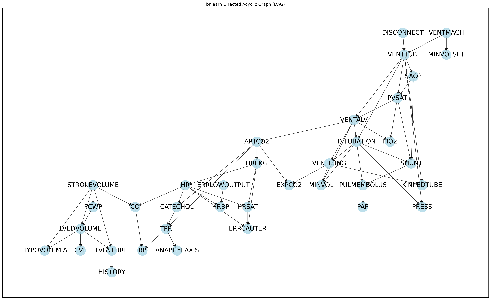
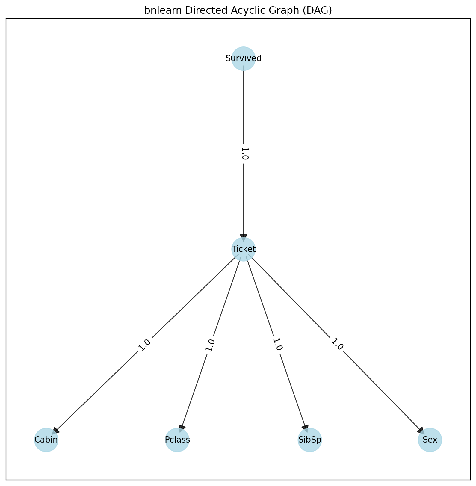
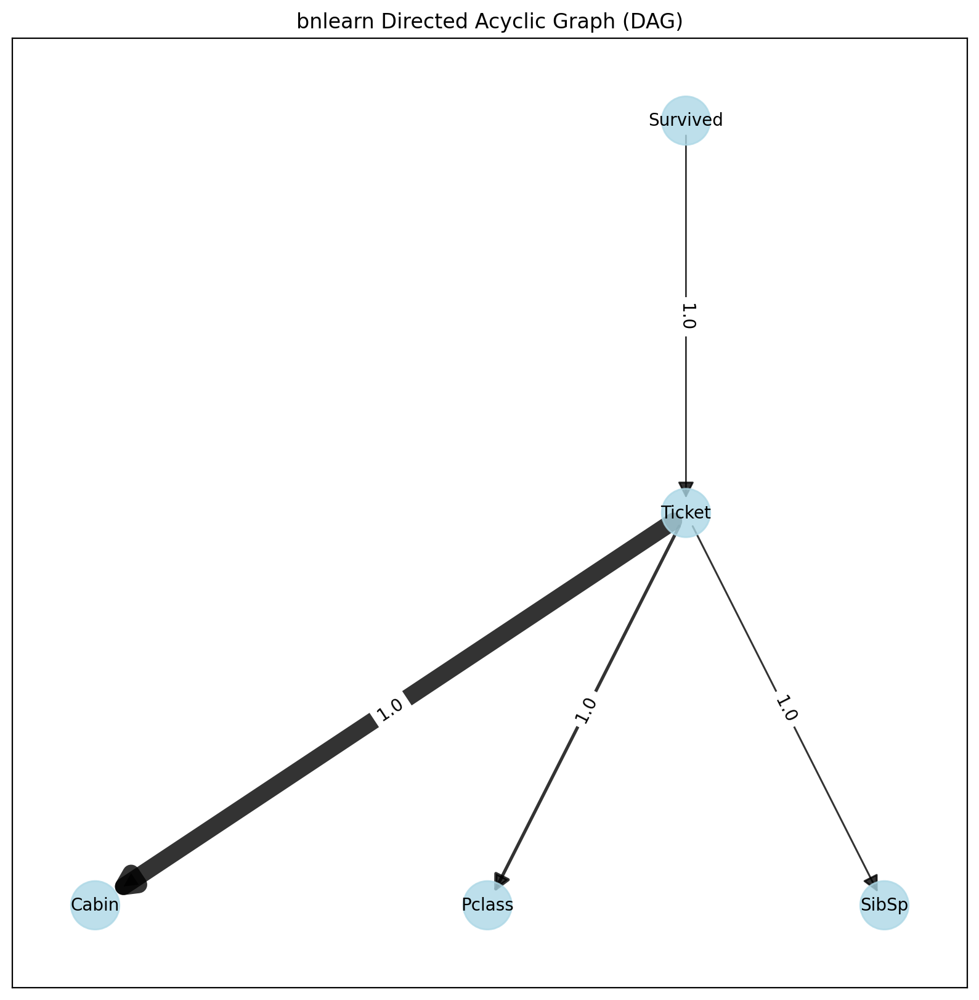
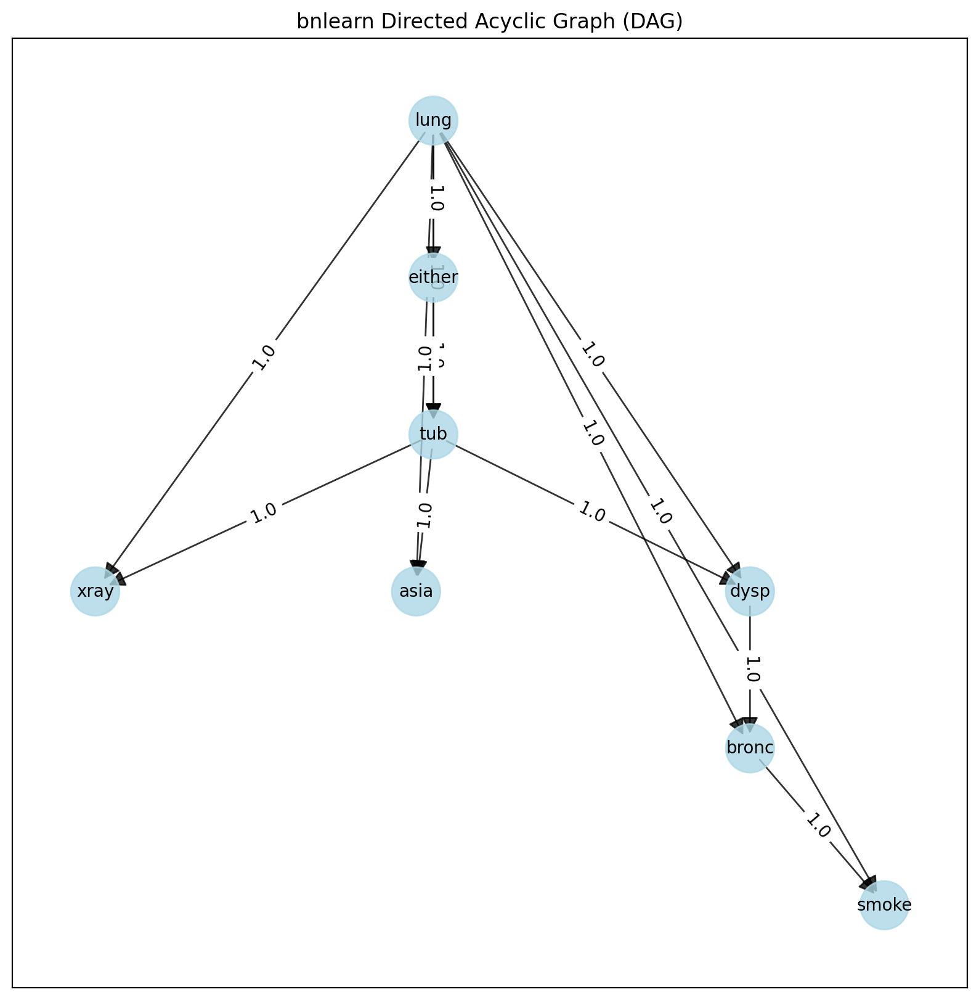
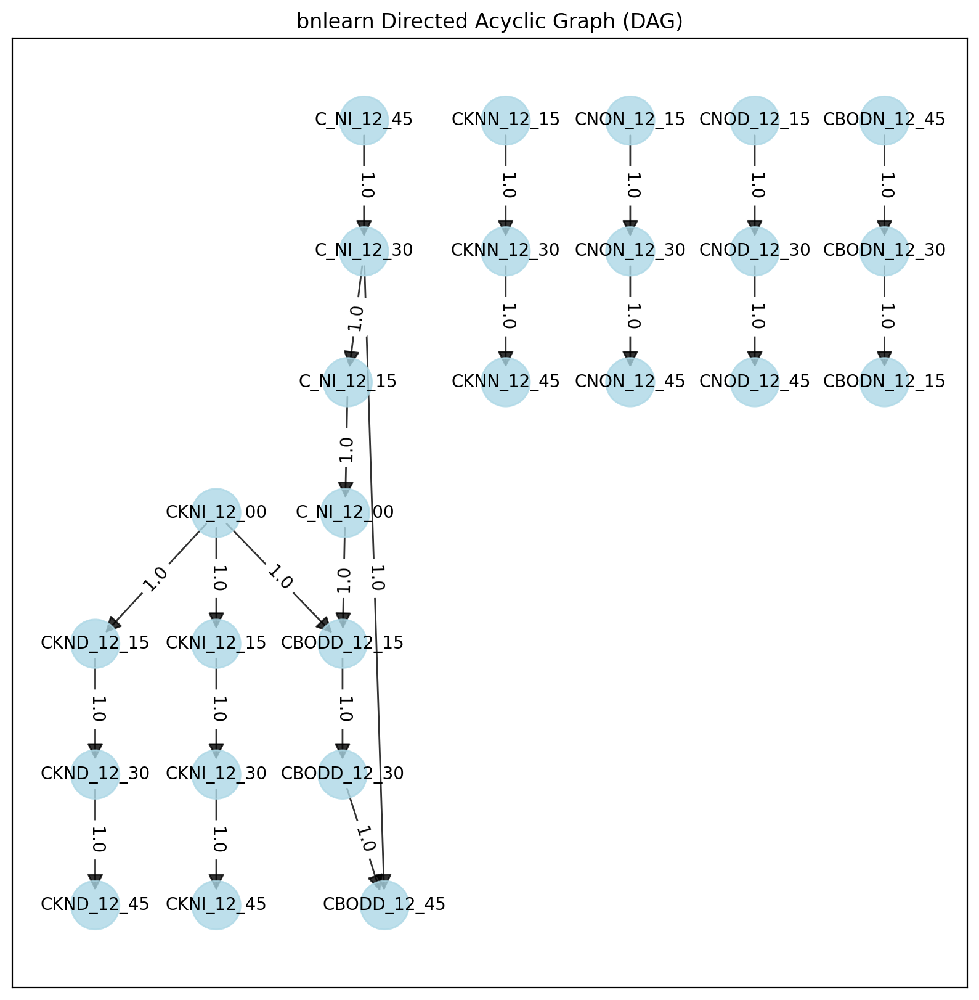
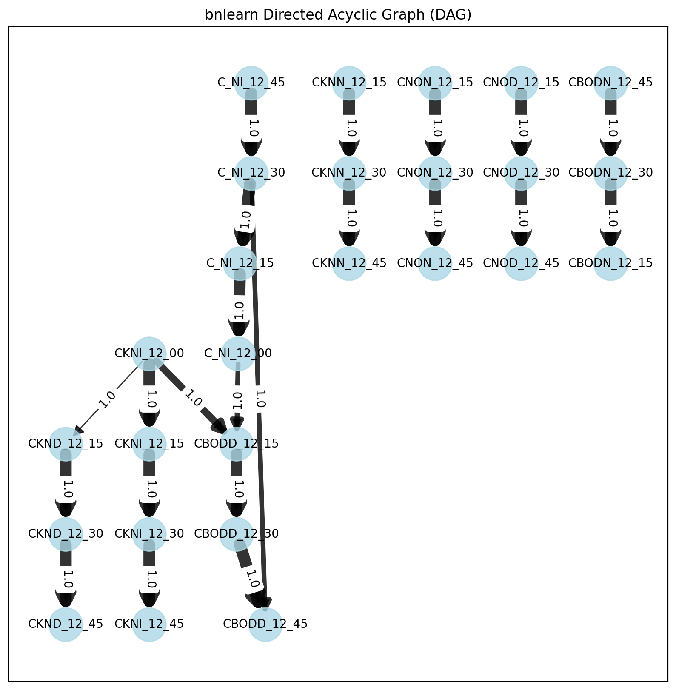

Causation
Causation means that one (independent) variable causes the other (dependent) variable and is formulated by Reichenbach (1956) as follows:
If two random variables X and Y are statistically dependent (X/Y), then either (a) X causes Y, (b) Y causes X, or (c ) there exists a third variable Z that causes both X and Y. Further, X and Y become independent given Z, i.e., X⊥Y∣Z.
This definition is incorporated in Bayesian graphical models (a.k.a. Bayesian networks, Bayesian belief networks, Bayes Net, causal probabilistic networks, and Influence diagrams). A lot of names for the same technique. To determine causality, we can use Bayesian networks (BN). Let’s start with the graph and visualize the statistical dependencies between the three variables described by Reichenbach (X, Y, Z) (see figure below). Nodes correspond to variables (X, Y, Z) and the directed edges (arrows) indicate dependency relationships or conditional distributions.
But how can we tell what causes what? The conceptual idea to determine the direction of causality, thus which node influences which node, is by holding a node constant and then observe the effect. As an example, let’s take DAG (a) in Figure 2, which describes that Z is caused by X, and Y is caused by Z. If we now keep Z constant there should not be a change in Y if this model is true. Every Bayesian network can be described by these four graphs, and with probability theory (see the section below) we can glue the parts together. It should be noted that a Bayesian network is a Directed Acyclic Graph (DAG) and DAGs are causal. This means that the edges in the graph are directed and there is no (feedback) loop (acyclic).
DAGs encode conditional independencies. (a, b, c) are Equivalence classes. (a, b) Cascade, (c ) Common parent, and (d) is a special class with V-structure.
Probability theory
Probability theory, or more specific Bayes theorem or Bayes Rule, forms the fundament for Bayesian networks. The Bayes rule is used to update model information, and stated mathematically as the underneath equation.
The equation consists of four parts; the posterior probability is the probability that Z occurs given X. The conditional probability or likelihood is the probability of the evidence given that the hypothesis is true. This can be derived from the data. Our prior belief is the probability of the hypothesis before observing the evidence. This can also be derived from the data or domain knowledge. Finally, the marginal probability describes the probability of the new evidence under all possible hypotheses which needs to be computed.
Structure learning
With structure learning, we want to determine the structure of the graph that best captures the causal dependencies between the variables in the data set.
What is the DAG that best fits the data?
A naïve manner to find the best DAG is simply creating all possible combinations of the graph, i.e., by making tens, hundreds, or even thousands of different DAGs until all combinations are exhausted. Each DAG can then be scored on the fit of the data. Finally, the best scoring DAG is returned. In the case of variables X, Y, Z, one can make the graphs as shown below and a few more because it is not only X>Z>Y, but it can also be like Z>X>Y, etc. The variables X, Y, Z can be boolean values (True or False), but can also have multiple states.
The search space of DAGs becomes so-called super-exponential in the number of variables that maximize the score. This means that an exhaustive search is practically infeasible with a large number of nodes, and therefore, various greedy strategies have been proposed to browse DAG space. With optimization-based search approaches, it is possible to browse a larger DAG space. Such approaches require a scoring function and a search strategy. A common scoring function is the posterior probability of the structure given the training data, like the BIC or the BDeu. Note that a local search strategy makes incremental changes aimed at improving the score of the structure. A global search algorithm like Markov chain Monte Carlo can avoid getting trapped in local minima but I will not discuss that here.
Approaches to search throughout the DAG space and find the best fitting graph for the data are implemented in bnlearn, and can be categorized under:
Score-based structure learning
Constraint-based structure learning
Hybrid structure learning
For score-based approaches there are two main components; 1. The search algorithm to optimize throughout the search space of all possible DAGs; such as ExhaustiveSearch, Hillclimbsearch, Chow-Liu.
2. The scoring function indicates how well the Bayesian network fits the data. Commonly used scoring functions are Bayesian Dirichlet scores such as BDeu or K2 and the Bayesian Information Criterion (BIC, also called MDL).
bnlearn contains the following Score-based structure learning methods:
Exhaustivesearch
Hillclimbsearch
Chow-liu
Tree-augmented Naive Bayes (TAN)
NaiveBayes
Each approach can be scored using the following scoretypes:
bic
k2
bdeu
Exhaustivesearch
The ExhaustiveSearch approach scores every possible DAG and returns the best-scoring DAG. This search approach is only attractable for very small networks and prohibits efficient local optimization algorithms to always find the optimal structure. Thus, identifying the ideal structure is often not tractable. Nevertheless, heuristic search strategies often yield good results if only a few nodes are involved (read: less than 5 or so).
Lets determine the best possible structure for the sprinkler dataset.
# Load library
import bnlearn as bn
# Load example
df = bn.import_example('sprinkler')
# Structure learning
model = bn.structure_learning.fit(df, methodtype='ex', scoretype='bic')
# Compute edge strength using chi-square independence test and remove (prune) the not-signficant edges
model = bn.independence_test(model, df, alpha=0.05, prune=True)
# Examine the output of the chi-square test. All P values are significant. Nothing is removed.
print(tabulate(model['independence_test'], tablefmt="grid", headers="keys"))
# source target stat_test p_value chi_square dof
#-- --------- --------- ----------- ----------- ------------ -----
# 0 Cloudy Rain True 1.08061e-87 394.062 1
# 1 Cloudy Sprinkler True 8.38371e-53 233.906 1
# 2 Rain Wet_Grass True 3.88651e-64 285.902 1
# 3 Sprinkler Wet_Grass True 1.19692e-23 100.478 1
# Plot
bn.plot(model)
{kind=link}
Hillclimbsearch
Hillclimbsearch is a heuristic search approach that can be used if more nodes are used. HillClimbSearch implements a greedy local search that starts from the DAG “start” (default: disconnected DAG) and proceeds by iteratively performing single-edge manipulations that maximally increase the score. The search terminates once a local maximum is found. With Hillclimbsearch we can determine the best DAG for multiple nodes.
Lets examine the results using hte alarm example that contains 37 nodes.
# Load library
import bnlearn as bn
# Load example
df = bn.import_example('alarm')
# Structure learning
model = bn.structure_learning.fit(df, methodtype='hc', scoretype='bic')
# Plot detected DAG
G = bn.plot(model)
# Compute edge strength using chi-square independence test
model1 = bn.independence_test(model, df, alpha=0.05, prune=False)
bn.plot(model1, pos=G['pos'])
# Examine the output of the chi-square test. 53 edges are detected but not all P values are significant, i.e. those with stat_test=False
print(tabulate(model1['independence_test'], headers="keys"))
# source target stat_test p_value chi_square dof
#-- ------------ ------------ ----------- ------------ ------------ -----
# 0 LVFAILURE HISTORY True 0 7179.51 1
# 1 LVEDVOLUME CVP True 0 12510.3 4
# 2 LVEDVOLUME HYPOVOLEMIA True 0 6421.13 2
# 3 LVEDVOLUME LVFAILURE True 0 5240.09 2
# 4 PCWP LVEDVOLUME True 0 15718.7 4
# 5 STROKEVOLUME PCWP True 0 1683.67 4
# 6 STROKEVOLUME CO True 0 6848.73 4
# 7 STROKEVOLUME LVFAILURE True 0 2083.49 2
# 8 STROKEVOLUME HYPOVOLEMIA True 0 1810.87 2
# 9 STROKEVOLUME LVEDVOLUME True 0 2221.26 4
#10 ERRLOWOUTPUT HRBP True 0 5828.4 2
#11 HR HREKG True 0 8306.22 4
#12 HR CO True 0 5444.03 4
#13 HR HRSAT True 0 8450.71 4
#14 HR HRBP True 0 9205.59 4
#15 ERRCAUTER HREKG True 0 7081.32 2
#16 ERRCAUTER HRSAT True 0 7126.75 2
#17 HREKG HRSAT True 0 14283.5 4
#18 TPR BP True 0 5639.01 4
#19 TPR ANAPHYLAXIS True 2.06818e-54 247.226 2
#20 ARTCO2 EXPCO2 True 2.02465e-308 1441.92 6
#21 ARTCO2 CATECHOL True 1.6471e-265 1219.37 2
#22 ARTCO2 TPR False 0.71824 2.09528 4
#23 VENTLUNG EXPCO2 True 0 9159.91 9
#24 VENTLUNG MINVOL True 0 10273.7 9
#25 VENTLUNG KINKEDTUBE True 1.75631e-26 122.985 3
#26 INTUBATION SHUNT True 0 4154.53 2
#27 INTUBATION VENTLUNG True 4.45141e-71 343.198 6
#28 INTUBATION PRESS True 2.65747e-161 761.872 6
#29 INTUBATION MINVOL True 0 4453.48 6
#30 FIO2 PVSAT True 6.37291e-152 696.282 2
#31 PVSAT VENTALV True 0 9573.62 6
#32 PVSAT SAO2 True 0 12841.4 4
#33 VENTALV ARTCO2 True 0 14150.2 6
#34 VENTALV MINVOL True 0 15664 9
#35 VENTALV VENTLUNG True 0 12209.5 9
#36 VENTALV INTUBATION True 0 5476.61 6
#37 SHUNT SAO2 True 6.09174e-48 217.434 2
#38 PULMEMBOLUS SHUNT True 8.36791e-157 711.741 1
#39 PULMEMBOLUS PAP True 1.07736e-243 1118.91 2
#40 PULMEMBOLUS ERRLOWOUTPUT True 0.0345358 4.46798 1
#41 KINKEDTUBE PRESS True 5.55643e-211 974.694 3
#42 VENTTUBE PVSAT True 0 4643.05 6
#43 VENTTUBE PRESS True 0 2834.42 9
#44 VENTTUBE VENTALV True 0 6157.26 9
#45 VENTTUBE INTUBATION False 0.548197 4.96588 6
#46 VENTTUBE KINKEDTUBE False 0.476625 2.49263 3
#47 MINVOLSET VENTMACH True 0 15374.5 6
#48 VENTMACH VENTTUBE True 0 12278.4 9
#49 DISCONNECT VENTTUBE True 0 3926.11 3
#50 CATECHOL TPR True 0 1813.11 2
#51 CATECHOL HR True 0 4253.1 2
#52 CO BP True 0 2246.32 4
# Compute edge strength using chi-square independence test and remove (prune) the not-signficant edges
model3 = bn.independence_test(model, df, alpha=0.05, prune=True)
bn.plot(model3, pos=G['pos'])
 |
Chow-liu
The Chow-Liu Algorithm is a Tree search based approach which finds the maximum-likelihood tree structure where each node has at most one parent. The complexity can be limited by restricting to tree structures which makes this approach very fast to determine the DAG using large datasets (aka with many variables) but requires setting a root node.
The Chow-Liu algorithm has three steps:
Compute the mutual information for all pairs of variables X,U. This function measures how much information U provides about X
Find the maximum weight spanning tree: the maximal-weight tree that connects all vertices in a graph. This can be found using Kruskal or Prim Algorithms
Pick any node to be the root variable, and assign directions radiating outward from this node (arrows go away from it). This step transforms the resulting undirected tree to a directed one.
Lets determine the best possible structure for the titanic dataset.
# Load library
import bnlearn as bn
# Load example
df_raw = bn.import_example(data='titanic')
# Preprocessing raw dataset
dfhot, dfnum = bn.df2onehot(df_raw)
# Structure learning
model = bn.structure_learning.fit(dfnum, methodtype='cl', black_list=['Embarked','Parch','Name'], root_node='Survived', bw_list_method='nodes')
# Plot detected DAG
G = bn.plot(model)
# Compute edge strength using chi-square independence test and remove (prune) the not-signficant edges
model1 = bn.independence_test(model, dfnum, alpha=0.05, prune=True)
# [bnlearn] >Edge [Ticket <-> Sex] [P=0.714624] is excluded because it was not significant (P<0.05) with [chi_square]
# Plot
bn.plot(model1, pos=G['pos'])
 |
 |
Tree-augmented Naive Bayes (TAN)
Tree-augmented Naive Bayes (TAN) algorithm is also a tree-based approach that can be used to model huge datasets involving lots of uncertainties among its various interdependent feature sets. It relaxes the naive Bayes attribute independence assumption by employing a tree structure, in which each attribute only depends on the class and one other attribute. A maximum weighted spanning tree that maximizes the likelihood of the training data is used to perform classification.
TAN has three steps:
Approximate the dependencies among features with a tree Bayes net.
- Tree induction algorithm
Optimality: Maximum likelihood tree
Efficiency: Polynomial algorithm
Robust parameter estimation
Lets determine the best possible structure for the asia dataset.
# Load library
import bnlearn as bn
# Load example
df = bn.import_example('asia')
# Structure learning
model = bn.structure_learning.fit(df, methodtype='tan', class_node='lung')
# Plot detected DAG
G = bn.plot(model)
# Compute edge strength using chi-square independence test
model1 = bn.independence_test(model, df, alpha=0.05, prune=False)
bn.plot(model1, pos=G['pos'])
# Examine the output of the chi-square test. 13 edges are detected but not all P values are significant, i.e. those with stat_test=False
print(tabulate(model1['independence_test'], headers="keys"))
# source target stat_test p_value chi_square dof
#-- -------- -------- ----------- ------------ ------------ -----
# 0 either xray True 0 5589.38 1
# 1 either tub True 5.36195e-294 1342.91 1
# 2 either dysp True 2.82344e-85 382.959 1
# 3 tub asia False 0.104413 2.63681 1
# 4 dysp bronc True 0 4737.06 1
# 5 bronc smoke True 1.0335e-211 964.3 1
# 6 lung asia False 1 0 1
# 7 lung tub False 0.125939 2.34186 1
# 8 lung smoke True 3.70391e-91 409.979 1
# 9 lung bronc True 1.90616e-09 36.0673 1
#10 lung either True 0 8604.76 1
#11 lung xray True 0 4800.25 1
#12 lung dysp True 1.34994e-76 343.097 1
# Compute edge strength using chi-square independence test and remove (prune) the not-signficant edges
model2 = bn.independence_test(model, df, alpha=0.05, prune=True)
# [bnlearn] >Edge [tub <-> asia] [P=0.104413] is excluded because it was not significant (P<0.05) with [chi_square]
# [bnlearn] >Edge [lung <-> asia] [P=1] is excluded because it was not significant (P<0.05) with [chi_square]
# [bnlearn] >Edge [lung <-> tub] [P=0.125939] is excluded because it was not significant (P<0.05) with [chi_square]
bn.plot(model2, pos=G['pos'])
 |
NaiveBayes
Naive Bayes is a special case of Bayesian Model where the only edges in the model are from the feature variables to the dependent variable.
The method requires specifying:
The root node.
Edges should start from the root node.
MaximumLikelihood estimator is the default.
Example to design a DAG with the naivebayes model:
# Load library
from pgmpy.factors.discrete import TabularCPD
import bnlearn as bn
# Create some edges, all starting from the same root node: A
edges = [('A', 'B'), ('A', 'C'), ('A', 'D')]
DAG = bn.make_DAG(edges, methodtype='naivebayes')
# Set CPDs
cpd_A = TabularCPD(variable='A', variable_card=3, values=[[0.3], [0.5], [0.2]])
cpd_B = TabularCPD(variable='B', variable_card=2, values=[[0.4, 0.9], [0.6, 0.1]], evidence=['A'], evidence_card=[2])
cpd_C = TabularCPD(variable='C', variable_card=2, values=[[0.4, 0.9], [0.6, 0.1]], evidence=['A'], evidence_card=[2])
cpd_D = TabularCPD(variable='D', variable_card=2, values=[[0.4, 0.9], [0.6, 0.1]], evidence=['A'], evidence_card=[2])
# Make the DAG
DAG = bn.make_DAG(DAG, CPD=[cpd_A, cpd_B, cpd_C, cpd_D], checkmodel=True)
# Plot the CPDs as a sanity check
bn.print_CPD(DAG, checkmodel=True)
# Plot the DAG
bn.plot(DAG)
Example for structure learning with the naivebayes model:
# Load library
import bnlearn as bn
# Load example
df = bn.import_example('random')
# Structure learning
model = bn.structure_learning.fit(df, methodtype='naivebayes', root_node="B")
# Compute edge strength using chi-square independence test
model = bn.independence_test(model, df, prune=False)
# Plot
bn.plot(model)
# Prune using the chi-square independence test
model = bn.independence_test(model, df, prune=True)
# [bnlearn] >Compute edge strength with [chi_square]
# [bnlearn] >Edge [B <-> A] [P=0.240783] is excluded because it was not significant (P<0.05) with [chi_square]
# [bnlearn] >Edge [B <-> C] [P=0.766384] is excluded because it was not significant (P<0.05) with [chi_square]
# [bnlearn] >Edge [B <-> D] [P=0.382504] is excluded because it was not significant (P<0.05) with [chi_square]
# Plot
bn.plot(model)
Constraint-based
A different, but quite straightforward approach to build a DAG from data is to identify independencies in the data set using hypothesis tests, such as chi2 test statistic. The p_value of the test, and a heuristig flag that indicates if the sample size was sufficient. The p_value is the probability of observing the computed chi2 statistic (or an even higher chi2 value), given the null hypothesis that X and Y are independent given Zs. This can be used to make independence judgements, at a given level of significance.
Hypothesis tests
Construct DAG (pattern) according to identified independencies (Conditional) Independence Tests
Independencies in the data can be identified using chi2 conditional independence tests.
Lets determine the best possible structure for the water dataset.
# Load library
import bnlearn as bn
# Load example
df = bn.import_example('water')
# Structure learning
model = bn.structure_learning.fit(df, methodtype='cs')
# Plot detected DAG
G = bn.plot(model)
# Compute edge strength using chi-square independence test
model = bn.independence_test(model, df, alpha=0.05, prune=True)
bn.plot(model, pos=G['pos'])
 |
 |
References